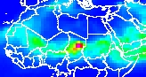

| Modeling Tools for Epidemic Meningitis |
| Regional Dust Model |
|  | Regional dust model results from 1985-2006, including climate variables, every 3 hours. |
| Monitoring Tools for Epidemic Meningitis |
| Precipitation Monitoring |
 | A rainfall-monitoring product based on daily rainfall estimates from NASA's TRMM satellite and surface measurements. |
| Aerosol Monitoring |
2455195./RANGE/T/0.667/dekadalAverage/X/Y/fig-/colors/black/thin/countries_gaz/-fig//plotborder/0/psdef//XOVY/null/psdef//antialias/true/psdef//plotaxislength/164/psdef/++//T/2453285./plotvalue//XOVY+null+psdef//plotaxislength+164+psdef//plotborder+0+psdef+.jpg) | An aerosol-monitoring product based on dekadal aerosol index analyses from NASA GSFC. The interface allows users to view recent aerosol index analyses with a seasonal and recent historical perspective. Time series analyses of aerosol index data are generated based on user-selected parameters. Note that the aerosols included in the index may be of various types and detected at any height in the atmosphere, not necessarily at the surface. |
| Specific Humidity Monitoring |
22645./RANGE/T/0.0/dekadalAverage/X/Y/fig-/colors/black/thin/countries_gaz/-fig//plotborder/0/psdef//XOVY/null/psdef//antialias/true/psdef//plotaxislength/164/psdef/++//qa/0.00139/0.023474/plotrange//T/14980.5/plotvalue//plotborder+0+psdef//XOVY+null+psdef//plotaxislength+164+psdef+.jpg) | A specific humidity-monitoring product based on dekadal near-surface specific humidity analyses from the NCEP/NCAR Reanalysis. The interface allows users to view recent specific humidity analyses with a seasonal and recent historical perspective. Time series analyses of specific humidity data are generated based on user-selected parameters. |
| Wind Monitoring |
22645/RANGE/T/0.0/dekadalAverage/:a:/.v/P/1000/VALUE/X/-20/55/RANGE/Y/-15/40/RANGE/T/(1%20Jan%201979)22645/RANGE/T/0.0/dekadalAverage/mag/windspeed_colors/:a:/.u/P/1000/VALUE/X/-20/55/RANGE/Y/-15/40/RANGE/T/(1%20Jan%201979)22645/RANGE/T/0.0/dekadalAverage/:a:/.v/P/1000/VALUE/X/-20/55/RANGE/Y/-15/40/RANGE/T/(1%20Jan%201979)22645/RANGE/T/0.0/dekadalAverage/:a/X/Y/fig-/colors/vectors/grey/black/thin/countries_gaz/-fig//plotborder/0/psdef//XOVY/null/psdef//antialias/true/psdef//plotaxislength/164/psdef//mag/0/20/plotrange//T/14980.5/plotvalue//XOVY/null/psdef//plotaxislength/164/psdef//plotborder/0/psdef/++//T/14980.5/plotvalue//plotborder+0+psdef//XOVY+null+psdef//plotaxislength+164+psdef+.jpg) | A wind-monitoring product based on dekadal near-surface wind analyses from the NCEP/NCAR Reanalysis. The interface allows users to view recent wind analyses with a seasonal and recent historical perspective. Time series analyses of wind data are generated based on user-selected parameters. |
| Temperature Monitoring |
unitconvert/P/1000/VALUE/X/-20/55/RANGE/Y/-15/40/RANGE/T/(1%20Jan%201979)22645/RANGE/T/0.0/dekadalAverage//plotlast/45/def//plotfirst/0.0/def/X/Y/fig-/colors/black/thin/countries_gaz/-fig//plotborder/0/psdef//XOVY/null/psdef//antialias/true/psdef//plotaxislength/164/psdef/++//T/14980.5/plotvalue//plotborder+0+psdef//XOVY+null+psdef//plotaxislength+164+psdef+.jpg) | A temperature-monitoring product based on dekadal near-surface temperature analyses from the NCEP/NCAR Reanalysis. The interface allows users to view recent temperature analyses with a seasonal and recent historical perspective. Time series analyses of temperature data are generated based on user-selected parameters. |
| Information Tools for Epidemic Meningitis |
| Distribution des Epidémies de Méningite Observées |
 | Distribution des épidémies de méningite observées pendant 1841-1999. |
| Probabilité Prévue de l'Occurence d'Epidémies de Méningite |
 | Une carte du risque de méningite déduit d'un modèle de prédiction de la probabilité d'occurence des épidémies, dérivé de l'environnement. |